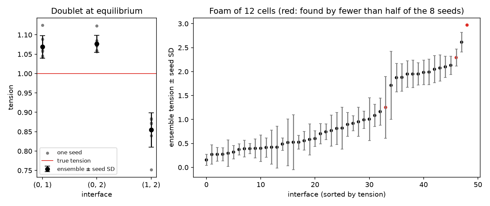

Seed ensembles¶
Tensions from eight reconstructions of one mask: the ensemble, its relative seed spread, its flags, its caveat.
delaunay-watershed-3d places its tessellation points with a small random dither, fixed by a seed (42 by default). Another seed gives a slightly different mesh of the same mask, and slightly different tensions. infer_tensions_over_seeds reconstructs the mask at a fixed list of seeds (0 to 7 by default), infers the tensions of each mesh and averages them per interface. This example runs it on two generated masks:
- a doublet at equilibrium: two equal spheres split by a plane, so that the three surfaces meet at 120 degrees and all three tensions are exactly 1. Its error against the truth can be compared with its seed spread: the spread is a lower bound on the error, not an error bar (it sees only the part of the error that changes with the seed, not the bias that every reconstruction shares);
- a foam of 12 Voronoi cells (not at equilibrium: its tensions show the workflow, not the accuracy), whose small facets are not found by every seed: such interfaces are flagged, not removed (
found_by_fewer_than_half_the_seeds). On synthetic tissues, most interfaces found by fewer than half of the seeds did not exist in the true tissue.
Fix the seed list in advance, and never choose seeds by their result. combine="angles" (average the contact angles over the seeds, then infer once) is experimental and warns with SeedEnsembleExperimentalWarning; it is run here once, with the quadric reading, for comparison only.
pip install "foambryo[viewing]" # matplotlib, for the figure
python seed_ensembles.py # one to two minutes; writes ./seed-ensembles-output/
The script: Examples/seed_ensembles.py. It needs only foambryo (and matplotlib, from foambryo[viewing], for its figure); it generates its own tissue.

Left: the doublet's three tensions at each of the 8 seeds (grey) and their ensemble with its seed SD (black); the true tension is 1 (red line). The error is two to three times the spread. Right: the foam's 49 ensemble tensions with their seed SD; in red the interfaces found by fewer than half of the seeds.
Output of one run¶
On macOS 14 (Apple M3 Max), Python 3.12; times vary with the machine.
doublet at equilibrium, 8 seeds (0..7); every true tension is 1
interface ensemble |error| seed SD relative SD
(0, 1) 1.069 0.069 0.029 2.7%
(0, 2) 1.076 0.076 0.022 2.0%
(1, 2) 0.855 0.145 0.044 5.2%
foam of 12 cells, 8 seeds
49 interfaces; relative seed SD median 30.7%, 90th percentile 77.6%
found by fewer than half of the seeds (flagged, kept): [(3, 6), (7, 12), (9, 12)] (seeds that found each: [3, 2, 1])
combine='angles' warned: SeedEnsembleExperimentalWarning
combine='angles' (quadric) against the default ensemble: median relative difference 14.1% over 49 interfaces (a comparison, not an accuracy)
figure: seed-ensembles-output/seed_ensembles.png
The script¶
#!/usr/bin/env python
"""Tensions from eight reconstructions of one mask: the ensemble, its relative seed spread, its flags, its caveat.
delaunay-watershed-3d places its tessellation points with a small random dither, fixed by a seed (42 by default).
Another seed gives a slightly different mesh of the same mask, and slightly different tensions.
`infer_tensions_over_seeds` reconstructs the mask at a fixed list of seeds (0 to 7 by default), infers the tensions
of each mesh and averages them per interface. This example runs it on two generated masks:
* **a doublet at equilibrium**: two equal spheres split by a plane, so that the three surfaces meet at 120 degrees
and all three tensions are exactly 1. Its error against the truth can be compared with its seed spread: the
spread is a **lower bound on the error, not an error bar** (it sees only the part of the error that changes with
the seed, not the bias that every reconstruction shares);
* **a foam of 12 Voronoi cells** (not at equilibrium: its tensions show the workflow, not the accuracy), whose small
facets are not found by every seed: such interfaces are **flagged**, not removed
(`found_by_fewer_than_half_the_seeds`). On synthetic tissues, most interfaces found by fewer than half of the seeds
did not exist in the true tissue.
Fix the seed list in advance, and never choose seeds by their result. `combine="angles"` (average the contact angles
over the seeds, then infer once) is experimental and warns with `SeedEnsembleExperimentalWarning`; it is run here
once, with the quadric reading, for comparison only.
pip install "foambryo[viewing]" # matplotlib, for the figure
python seed_ensembles.py # one to two minutes; writes ./seed-ensembles-output/
"""
import argparse
import warnings
from pathlib import Path
import numpy as np
from scipy.spatial import cKDTree
from foambryo import SeedEnsembleExperimentalWarning, infer_tensions_over_seeds
def doublet(radius: int = 30, n: int = 102) -> np.ndarray:
"""Two equal spheres of radius `radius` whose centres are `radius` apart, split by the plane between them."""
z, y, x = np.indices((n, n, n))
c = (n - 1) / 2
left = (z - c) ** 2 + (y - c) ** 2 + (x - (c - radius / 2)) ** 2 <= radius**2
right = (z - c) ** 2 + (y - c) ** 2 + (x - (c + radius / 2)) ** 2 <= radius**2
return np.where(left | right, np.where(x < c, 1, 2), 0).astype(np.uint16)
def generated_foam(n: int = 96, n_cells: int = 12, seed: int = 7) -> np.ndarray:
"""Voronoi cells filling a ball, on an `n`^3 grid of cubic voxels; label 0 is the medium."""
rng = np.random.default_rng(seed)
radius, centre = 0.46 * n, (n - 1) / 2
seeds: list[np.ndarray] = []
while len(seeds) < n_cells: # well-separated seeds inside the ball
point = rng.uniform(-0.75 * radius, 0.75 * radius, 3)
if np.linalg.norm(point) < 0.75 * radius and all(np.linalg.norm(point - s) > 0.35 * radius for s in seeds):
seeds.append(point)
grid = np.indices((n, n, n)).reshape(3, -1).T.astype(float)
_, nearest = cKDTree(np.asarray(seeds) + centre).query(grid)
inside = np.linalg.norm(grid - centre, axis=1) <= radius
return np.where(inside, nearest + 1, 0).reshape(n, n, n).astype(np.uint16)
def main() -> None:
"""Run the two ensembles and the experimental angle averaging, print them and draw them."""
parser = argparse.ArgumentParser(description=__doc__.splitlines()[0])
parser.add_argument("--output-dir", type=Path, default=Path("seed-ensembles-output"))
parser.add_argument("--max-workers", type=int, default=1, help="seeds reconstructed at once (same result)")
args = parser.parse_args()
args.output_dir.mkdir(parents=True, exist_ok=True)
print("doublet at equilibrium, 8 seeds (0..7); every true tension is 1")
pair = infer_tensions_over_seeds(doublet(), max_workers=args.max_workers)
print(" interface ensemble |error| seed SD relative SD")
for key, tension in pair.tensions.items():
print(f" {key!s:10s} {tension:8.3f} {abs(tension - 1):8.3f} {pair.tension_seed_sd[key]:8.3f} "
f"{pair.relative_tension_seed_sd[key]:11.1%}")
print("foam of 12 cells, 8 seeds")
foam_mask = generated_foam()
foam = infer_tensions_over_seeds(foam_mask, max_workers=args.max_workers)
flagged = [k for k, flag in foam.found_by_fewer_than_half_the_seeds.items() if flag]
spread = np.array([v for v in foam.relative_tension_seed_sd.values() if np.isfinite(v)])
print(f" {len(foam.tensions)} interfaces; relative seed SD median {np.median(spread):.1%}, "
f"90th percentile {np.quantile(spread, 0.9):.1%}")
print(f" found by fewer than half of the seeds (flagged, kept): {flagged} "
f"(seeds that found each: {[foam.n_seeds_found[k] for k in flagged]})")
with warnings.catch_warnings(record=True) as caught:
warnings.simplefilter("always", SeedEnsembleExperimentalWarning)
angles = infer_tensions_over_seeds(foam_mask, combine="angles", angle_reading="quadric",
max_workers=args.max_workers)
if any(issubclass(w.category, SeedEnsembleExperimentalWarning) for w in caught):
print(" combine='angles' warned: SeedEnsembleExperimentalWarning")
shared = [k for k in foam.tensions if np.isfinite(foam.tensions[k]) and np.isfinite(angles.tensions.get(k, np.nan))]
difference = np.array([abs(angles.tensions[k] - foam.tensions[k]) / foam.tensions[k] for k in shared])
print(f" combine='angles' (quadric) against the default ensemble: median relative difference "
f"{np.median(difference):.1%} over {len(shared)} interfaces (a comparison, not an accuracy)")
try:
import matplotlib.pyplot as plt
except ImportError:
print("matplotlib is not installed: no figure (pip install 'foambryo[viewing]')")
return
figure, axes = plt.subplots(1, 2, figsize=(10, 4.2), gridspec_kw={"width_ratios": [1, 2.4]})
keys = list(pair.tensions)
for i, key in enumerate(keys):
seeds = [pair.per_seed_tensions[s][key] for s in pair.seeds]
axes[0].scatter([i] * len(seeds), seeds, s=12, color="grey", label="one seed" if i == 0 else None)
axes[0].errorbar(i, pair.tensions[key], yerr=pair.tension_seed_sd[key], fmt="o", color="black",
capsize=4, label="ensemble ± seed SD" if i == 0 else None)
axes[0].axhline(1.0, color="#de2d26", linewidth=1, label="true tension")
axes[0].set(xticks=range(len(keys)), xticklabels=[str(k) for k in keys], xlabel="interface",
ylabel="tension", title="Doublet at equilibrium")
axes[0].legend(fontsize=8)
keys = sorted(foam.tensions, key=lambda k: foam.tensions[k])
colours = ["#de2d26" if foam.found_by_fewer_than_half_the_seeds[k] else "black" for k in keys]
axes[1].errorbar(range(len(keys)), [foam.tensions[k] for k in keys], yerr=[foam.tension_seed_sd[k] for k in keys],
fmt="none", ecolor="grey", capsize=2)
axes[1].scatter(range(len(keys)), [foam.tensions[k] for k in keys], s=14, c=colours)
axes[1].set(xlabel="interface (sorted by tension)", ylabel="ensemble tension ± seed SD",
title="Foam of 12 cells (red: found by fewer than half of the 8 seeds)")
figure.tight_layout()
figure.savefig(args.output_dir / "seed_ensembles.png", dpi=150)
print(f"figure: {args.output_dir / 'seed_ensembles.png'}")
if __name__ == "__main__":
main()